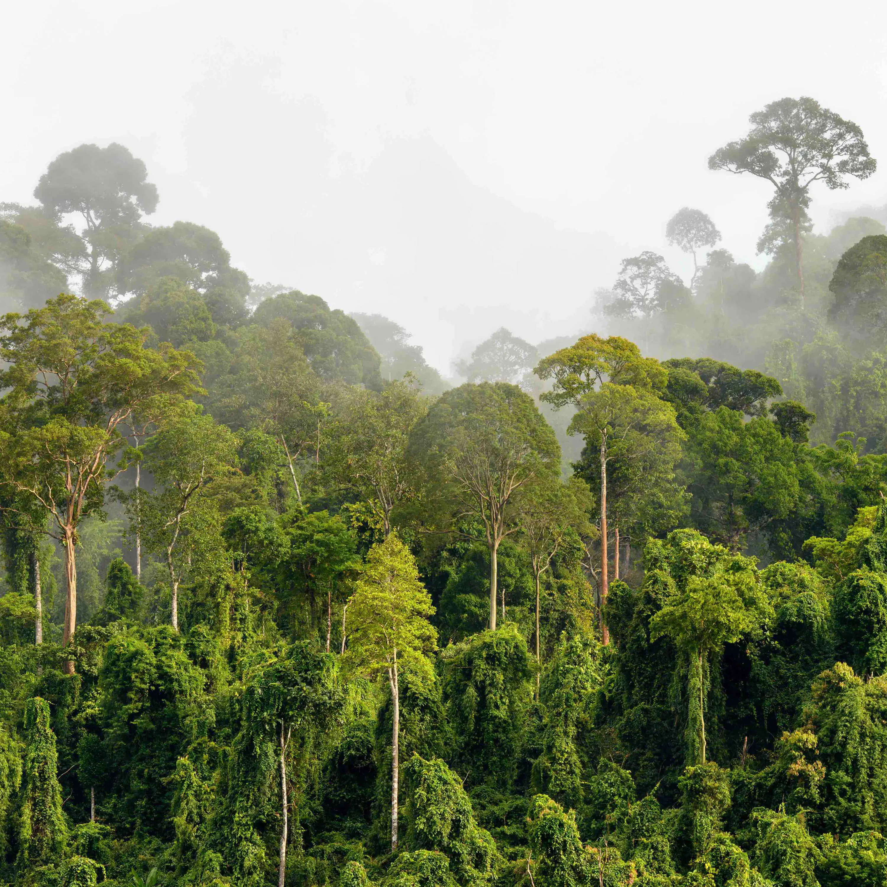

Trees are perennial plants with an elongated stem or trunk that supports branches and leaves, functioning as the primary stabilization system for global ecosystems and climates. Botanically, they are divided into deciduous types, which drop their leaves annually in autumn (like oaks and maples), and coniferous types, which are evergreen and use cones to reproduce (like pines and spruces). They keep our planet alive by absorbing carbon dioxide and converting it into oxygen, while their root systems anchor the soil to prevent erosion. Structurally, water travels up from the roots through tissue called xylem, while nutrients generated from photosynthesis travel down from the leaves via phloem. Today, trees face severe environmental pressures from global deforestation and climate-driven pest infestations, making forest conservation a critical priority for maintaining global biodiversity.